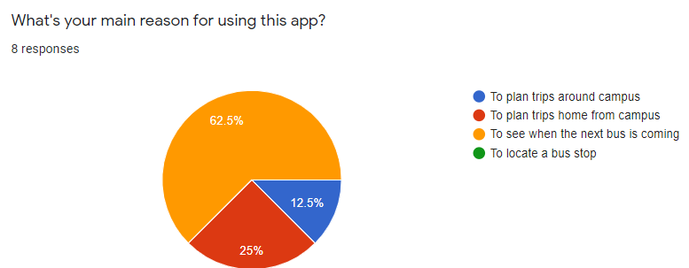
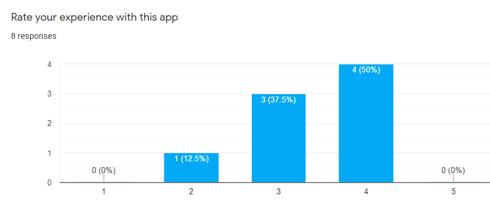
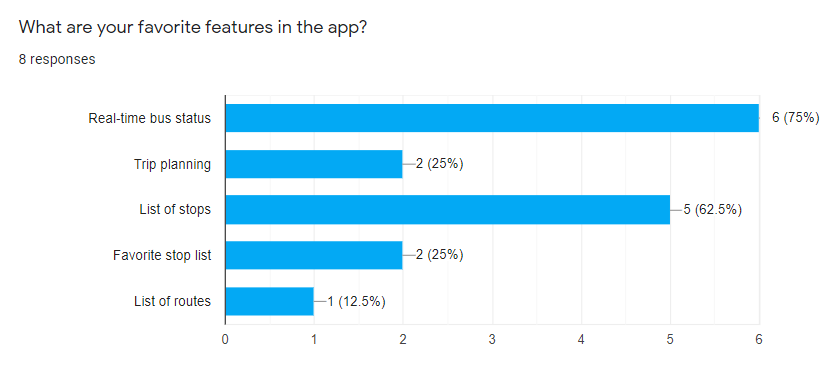

myStop Mobile is an application that provides users with real-time bus status and trip planning features. It is currently used in over 50 cities to detail bus transit information based on the user’s location.
Although, myStop Mobile has tens of thousands of users across the country, the usability and user experience are not up to par for an application of this scale. In particular, the list of stops has no organization and makes it difficult for users to plan their routes.
The primary users of this application are individuals that rely on public transportation to get from one place to another. They range in age from youth to adults.
As a user of this app, I have experienced firsthand how poor the usability is and how frustrating this can be. Due to this, I conducted a case study in which I surveyed myStop users to collect their thoughts on the app.
“How might we improve the experience of individuals who utilize the myStop app to plan their bus routes?”
To gain insight on the individuals whom I was researching, I asked questions relating to their app use and favorite features.

More than half the individuals surveyed stated their main reason for using the app is to see when the next bus is coming.

None of the responses for overall app experience were 5-stars which indicates the room for improvement.

Most expressed that their favorite app features are the real-time bus status followed by the list of stops. This got me thinking as to how I could improve the user experience for these two features.
The most prominent issue with this mobile application is the usability. Navigating around the app and finding what you are looking for is frustrating and time consuming due to a lack of organization.
“This app is very hard to navigate and it isn’t very clear. As a freshman this made it hard to even use the app.”
“Sometimes it's hard to find specific stops because the locations aren't broken into categories.”
To resolve the issues users are having with navigating around the app, I decided to design a more user-friendly app flow.
First, I simplified the navigation menu by using terms that are more clear for users to understand. I also replaced the current icons with ones that symbolize the navigation key words so users can better associate the text with their icons.
Then, I reformated the "List of Stops" page by breaking it down into categories. This will help app users locate the stops that they are searching for with ease.
My main goal for this app redesign was to enhance the user experience by improving the usabilty and flow of the app. Data from the surveys shows that people are having trouble finding what they need in the current app, so my redesign made navigation more inherent for users.